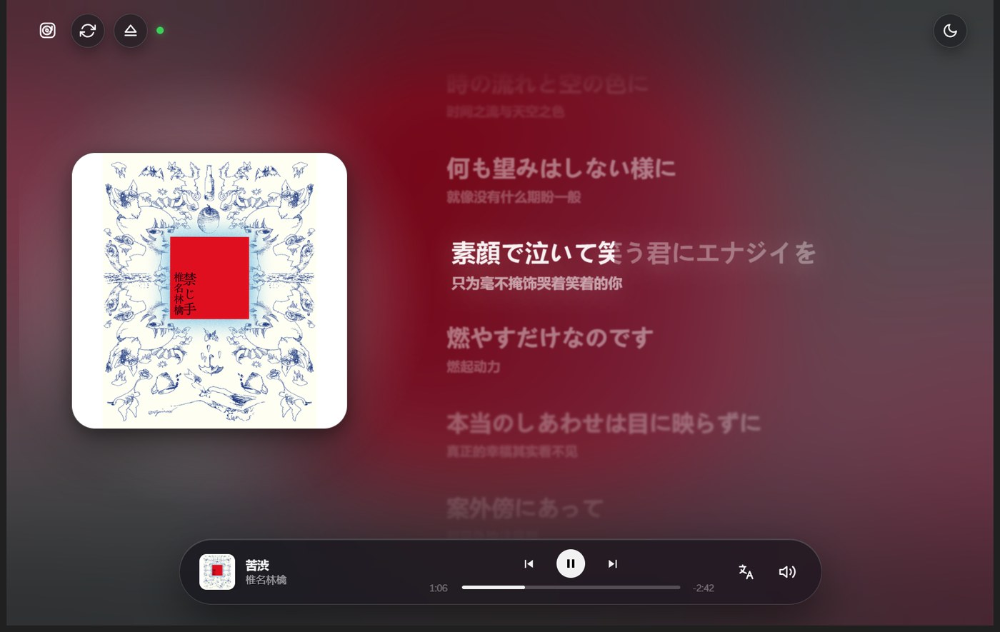
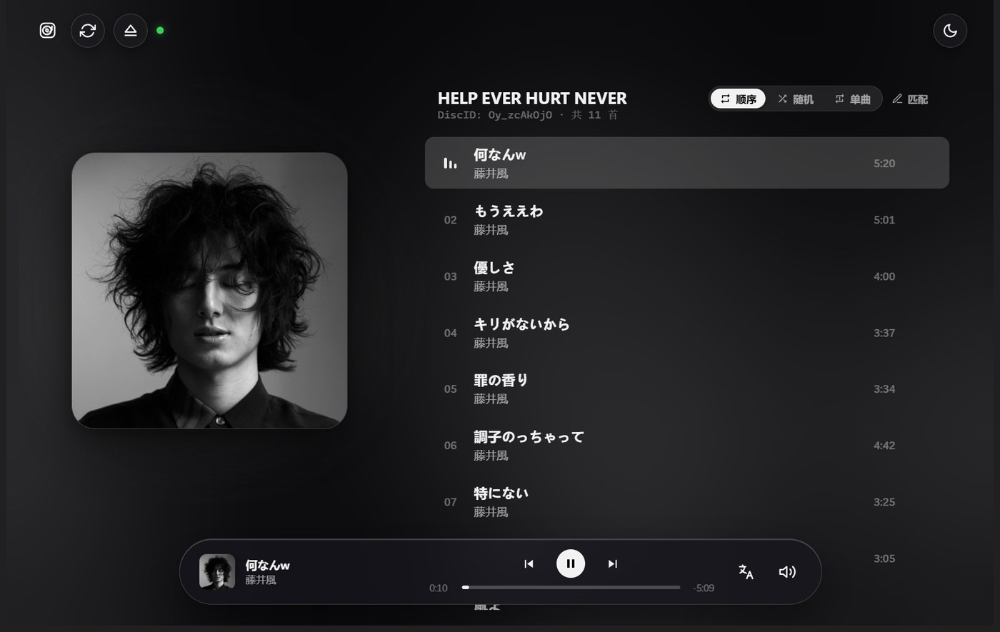
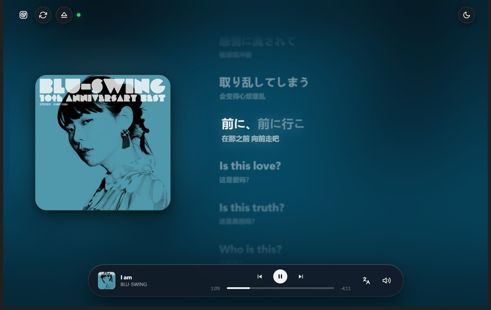
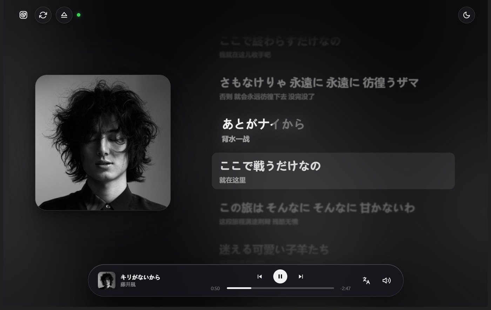
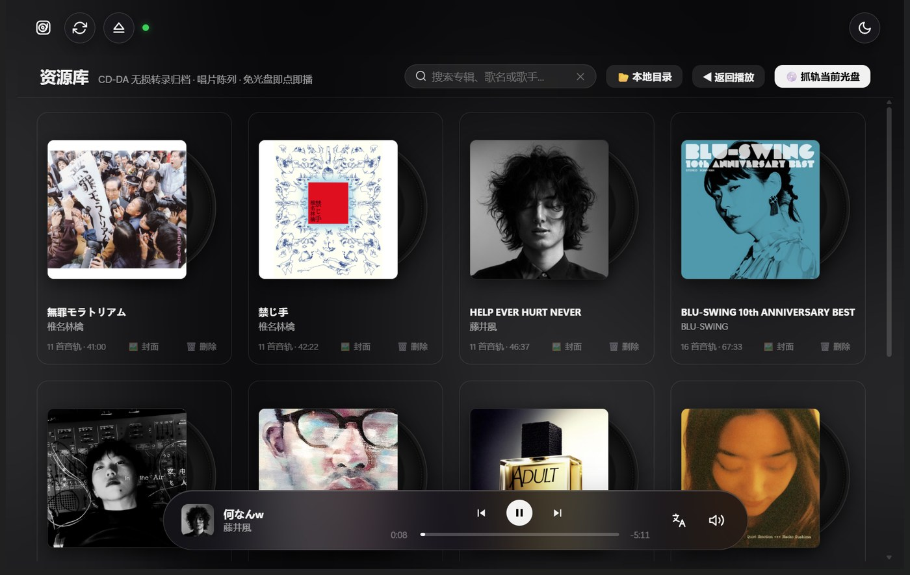
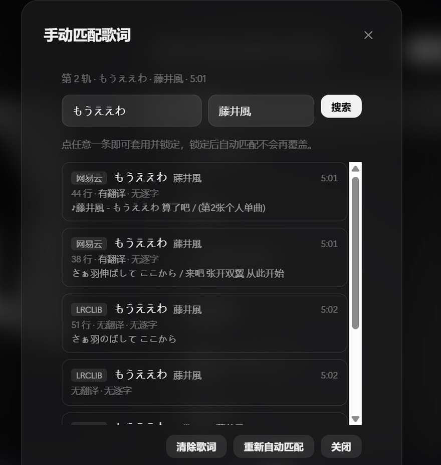
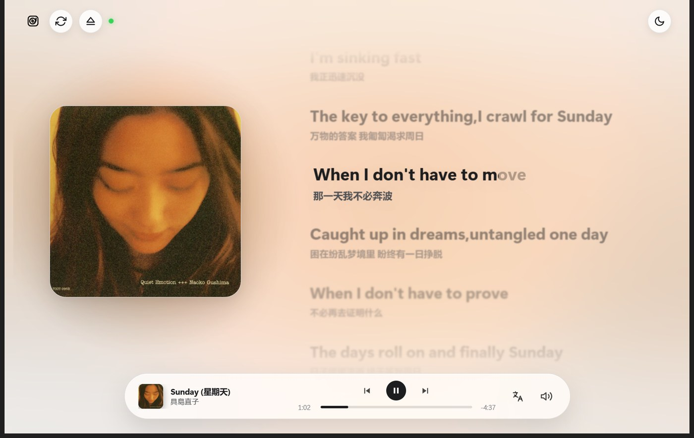

一束激光，一段没有被压缩过的声音。
Discflow 直接读你的光驱 —— 不转码、不缓存、不改写。
免安装 · 单文件 13.9 MB · Windows 10 / 11

这三件事，今天的播放器几乎都不做了。
大多数播放器要先把整张碟转成文件才能出声。Discflow 不走这条路 —— 它用 Win32 的光驱指令直接读 CDDA 原始扇区，边读边放。16-Bit / 44.1 kHz 原样出来，中间没有任何一次编码。

网易云、QQ 音乐、LRCLIB 三源同时取词，取回的是带时间轴的原文和译文。Discflow 把每一行拆成词块，按音节长度分配时长，跟着播放头一个一个点亮。
专辑匹配时会顺手记下每首歌的歌曲 ID。之后整张碟的歌词按 ID 直取 —— 11 首大约 8 秒跑完，不用一首一首等。
从封面里提取主色，生成一层会缓慢流动的弥散光斑。换一张黑白人像，整屏跟着冷下来；换一张青色封面，房间就变成海水的颜色。


可以把 CD 逐扇区无损转录成 WAV，连同封面、曲目、歌词一起归档。以后不用插盘，点开就能听。整库支持 ZIP 导出导入，换台电脑解压即用。

MusicBrainz DiscID 精确匹配，TOC 时长加权兜底，还有 GNUDb / FreeDB 备选。都对不上时，QQ 音乐、iTunes、网易云三源并发检索，手动挑一条套用整张。
曲库里那些 Shift-JIS 误解码的残次条目（把「ー・ママ」变成「蕙」），会被识别出来排到最后，绝不写进你的资料库。

两套完整配色，不是简单反色 —— 分隔线、阴影、玻璃层次都单独调过。右上角一键切换，环境光跟着变浅，字反而更清楚。

IOCTL_CDROM_RAW_READ 逐扇区直读，winmm.dll waveOut 输出把抽屉里那张 CD 重新放进光驱。
免安装、不写注册表、不驻留后台。
Windows 10 / 11 · 64 位 · 13.9 MB
免安装单文件 · 也可以到 GitHub Releases 查看更新说明